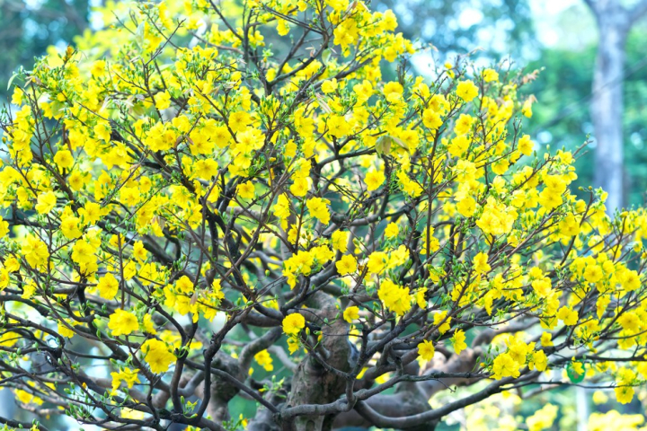
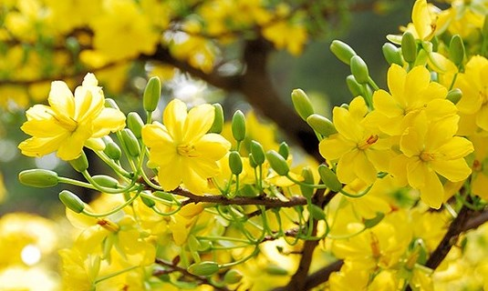
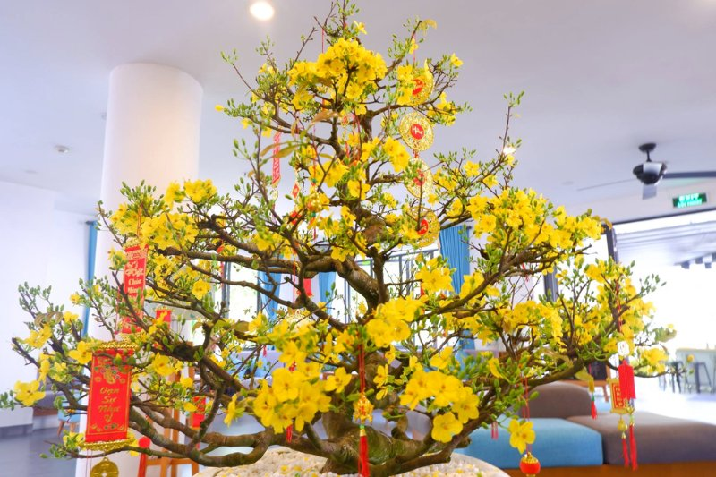
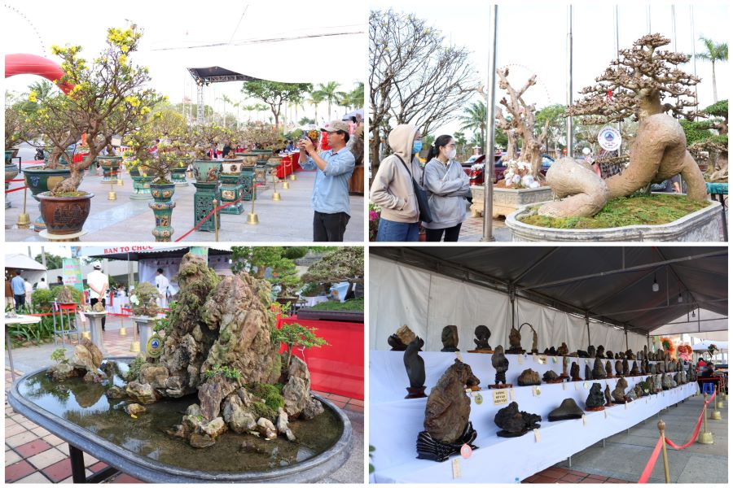
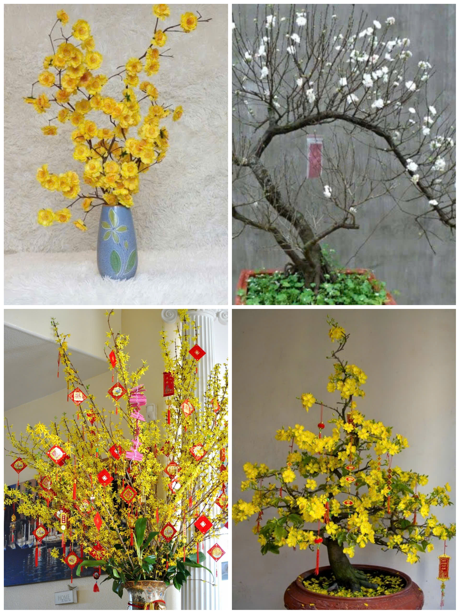

Miền Bắc thì có hoa Đào và Miền Nam ta có màu vàng hoa Mai. Phải mỗi dịp Xuân về ta sẽ bắt gặp màu vàng tươi mới của hoa Mai ở nhà nhà nơi nơi ở miền Nam. Nguồn gốc của hoa mai từ cây hoang dại,xa xưa tổ tiên đi khai khẩn miền đất Phương Nam đã tìm thấy loại cây có năm cánh và nở vào dịp Tết giống hoa đào nên đã đem về trưng Tết.Cây hoa Mai thuộc họ Ochnaceae và có tên khoa học là Ochna integerima. Ở Việt Nam nước ta cây Mai được phân bố nhiều ở miền Nam Việt Nam. Là cây đa niên, có tuổi thọ lên đến trăm năm gốc to rễ lồi lõm thân xù xì ,cành va nhánh nhiều. Theo tự nhiên lá Mai sẽ rụng vào mùa đông và ra hoa khi xuân đến vì thế chúng ta thường sẽ tước lá vào gần cuối tháng chạp để tạo điều kiện kích thích cho cây chăm hoa và nở tốt vào xuân . 
Nguồn: cafeland.vn
Phải hoa Mai không chỉ là một loài hoa đẹp của riêng mình mà nó còn mang ý nghĩa rất lớn với người dân Việt Nam đặt biệt là miền Nam .Khi hoa Mai vàng rực đua nở cũng là lúc báo hiệu cho một sự chuyển giao ta bước qua một năm mới.Màu vàng ánh của hoa tạo nên sự ấm áp nhộn nhịp đầy sức sống. Hoa Mai mang ý nghĩa về tinh thần sâu sắc tạo niềm vui và mong đợi ngoài ra còn mang ý nghĩa vật chất khi nó là có thể mang lại nguồn thu nhập lớn đối với những nhà chơi kiểng.Hoa Mai thật sự là loài hoa tuyệt vời và đầy ý nghĩa.Hoa Mai không lộng hành kiêu sa sắc hương như các loài hoa khác nhưng hoa mai mang cốt cách sống của loài mai biểu trưng cho những đức tính tốt đẹp của con người. Cành mai ngày tết là hình ảnh ẩn dụ cho sức sống và trí tuệ của con người Việt Nam. Tên gọi của loài hoa này cũng chính là biểu tượng của sự may mắn ,sung túc một sự thành công cho một năm mới. Hoa mai còn có ý nghĩa xua tan những điều không tốt và cầu cho một năm mới luôn được bình an, hạnh phúc và phát đạt. Và vì thế mà hoa mai vàng trở thành là một trong những sự lựa chọn hàng đầu của người dân nước ta đặc biệt là người miền Nam, chọn để thờ cúng và trang trí trong nhà vào dịp Tết Nguyên Đán. Mỗi độ xuân về, mai vàng làm sắc xuân trở nên tươi đẹp 
Nguồn: quiz.contuhoc.com
Năm cánh hoa mai là hình ảnh năm vị thần may mắn, của ngũ phúc (phúc, lộc, thọ, khang, ninh), là biểu tượng của sự trường thọ,… Vì thế tục lệ vào đầu năm nhà nhà ai cũng sẽ có ít nhất là một nhành Mai chưng trên bàn thờ gia tiên ,và cũng có những gia đình họ chăm sóc cây Mai nở vàng cả một góc sân.Và cả khi ta đến nhà chúc tết trên tay cầm nhành Mai đó là như lời chúc có ý nghĩa nhất, tinh tế nhất đối với gia chủ.Bởi vì ý nghĩa to lớn và tốt đẹp nên phong tục có hoa Mai trong nhà vào ngày Tết luôn được lưu giữ và phát hiện hơn.Bởi vì mang ý nghĩa tốt đẹp Hoa Mai nở rực rỡ vào mùa Xuân, là biểu tượng cho cái đẹp tươi mới, sự thịnh vượng, sự khởi động trong năm mới. Đối với người miền Nam, nếu hoa Mai nở ngay vào lúc đón giao thừa hay nở vào sáng sớm mùng một Tết thì điều đó càng ý nghĩa hơn đó là sự may mắn, thịnh vượng, và hạnh phúc sẽ đến với cả gia đình trong năm đó. Ngoài ra cây mai còn mang đến sự bình an, xua đuổi tà ma, bảo vệ gia đình khỏi những điều xấu xa. Bởi vậy phong tục liên quan đến hoa mai ngày càng được rộng rãi và lưu truyền. 
Nguồn: vietgourmet.vn
Hoa mai trên thế giới có rất nhiều loại, ước tính lên đến hơn 20 loại khác nhau. Tại Việt Nam, hoa mai rất phổ biến với khoảng 8 loại, trong đó có 4 loại chính được yêu thích và trồng rộng rãi: Bạch Mai, Nhất Chi Mai, Mai Tứ Quý và Mai Vàng. Đặc biệt, Mai Vàng là biểu tượng không thể thiếu trong dịp Tết Nguyên Đán, mang ý nghĩa may mắn, tài lộc. Các loại mai khác như Mai Tứ Quý cũng rất được ưa chuộng nhờ khả năng nở quanh năm, vừa làm đẹp không gian, vừa giữ giá trị phong thủy tốt đẹp. Việc bảo tồn và phát triển các giống mai quý luôn được chú trọng tại Việt Nam.
Mai Tứ Quý là loài cây cảnh nổi bật và được ưa chuộng ở Việt Nam, đặc biệt trong dịp Tết Nguyên Đán. Cây có tên gọi này vì khả năng ra hoa quanh năm, mỗi mùa nở một lần, tạo nên sự sống động, tươi mới cho không gian sống. Hoa Mai Tứ Quý có màu vàng rực rỡ, tượng trưng cho sự may mắn, thịnh vượng và tài lộc, mang đến không khí ấm cúng, an khang cho gia đình. Loài cây này rất dễ chăm sóc, có thể phát triển tốt trong nhiều loại đất và khí hậu khác nhau. Mai Tứ Quý thường được trồng trong chậu nhỏ, thích hợp trang trí ở sân vườn hoặc trong nhà. Không chỉ mang lại vẻ đẹp thiên nhiên, Mai Tứ Quý còn là biểu tượng của sự phát triển, hạnh phúc và phú quý, được nhiều người lựa chọn để làm cây cảnh trong ngày Tết.
Nguồn: wikimedia.org
Hoa bạch mai là loài mai quý hiếm tại Việt Nam, nổi bật với sắc trắng tinh khôi, tượng trưng cho sự thanh cao và tinh khiết. Hoa thường có từ 5 đến 9 cánh, đôi khi nhiều hơn, tạo nên vẻ đẹp trang nhã, độc đáo. Lá bạch mai mảnh mai, xanh tươi, làm nổi bật những đóa hoa trắng muốt. Loài hoa này nở vào mùa xuân, đặc biệt là dịp Tết Nguyên Đán, mang ý nghĩa thịnh vượng và may mắn.Do yêu cầu chăm sóc khắt khe, bạch mai không phổ biến như mai vàng, nhưng vẫn được yêu thích bởi vẻ đẹp thanh tao và giá trị phong thủy cao. Sự hiện diện của bạch mai vào dịp Tết thể hiện gu thẩm mỹ tinh tế của gia chủ.
Nguồn: inkythuatso.com
Nhất chi mai là loài hoa đặc trưng của miền Bắc Việt Nam, thường nở vào dịp Tết Nguyên Đán. Hoa có màu vàng rực rỡ, mỗi cành chỉ có một bông hoa lớn, đẹp mắt, tượng trưng cho sự may mắn, tài lộc và thịnh vượng. Cánh hoa dày, nở tròn đều, tạo thành hình dáng giống như một mặt trời nhỏ. Nhất chi mai có thể chịu được thời tiết lạnh, dễ chăm sóc và rất thích hợp trồng trong chậu hoặc làm cây cảnh trong nhà. Loài hoa này không chỉ mang lại vẻ đẹp nổi bật, mà còn có giá trị phong thủy, giúp gia chủ đón nhận nhiều điều tốt đẹp, đặc biệt là trong dịp đầu năm.
Nguồn: hoadepviet.com
Mai vàng là loài hoa đặc trưng của Tết Nguyên Đán ở Việt Nam, với màu vàng rực rỡ tượng trưng cho tài lộc và may mắn. Hoa có 5 cánh, nở vào mùa xuân, thường được trồng ở miền Nam và rất được ưa chuộng trong các gia đình vào dịp Tết. Mai vàng có ý nghĩa sâu sắc trong phong thủy, giúp gia chủ đón nhận năm mới thịnh vượng, an lành. Cây có thân cứng, dễ chăm sóc, nở đều và kéo dài trong suốt những ngày Tết, là biểu tượng của sự phú quý, tài lộc. Với vẻ đẹp tươi sáng, mai vàng không chỉ tô điểm không gian sống mà còn mang lại niềm vui, hy vọng cho gia đình.
Nguồn: wikimedia.org
Do cấu tạo rễ cái của cây hoa mai khá dài nên nếu ngập nước lâu ngày sẽ khiến bộ rễ bị thối làm cây úng nước, héo và chết dần. Nên việc đầu tiên ta nên làm là chọn nơi trồng.Thứ hai ta nên chú ý cách chọn giống cách lại tạo không phải loại Mai nào cũng chăm sóc giống nhau và còn cả cách lai tạo ta nên ưu ái lai tạo vô tính như chiết ,ghép hoặc giâm cành.Và tiếp đến mặc dù cây Mai có thể chịu được thời tiết coi bức khắt nghiệt nhưng chỉ chịu được một phần nên ta cần chú ý việc tưới tiêu. Và cũng là phần khá quan trọng là phân bón ta nên chọn những loại phân phù hợp nên hỏi ý những người có kinh nghiệm học tập và làm theo chia sẻ của họ để biết được loại phân bón phù hợp.Cũng nên chú ý diệt cỏ dại và sâu bọ quanh cây.Chú ý lặt bớt ngọn và tuốt lá khi đến thời điểm
Việc đầu tiên cần làm là xem và quan sát các cành muốn tạo dáng cắt bỏ những cành thừa không cần thiết. Việc tạo dáng Mai thường rơi vào tháng tuổi thứ 7 của cây Mai vì thời điểm đó Mai bắt đầu phát triển mạnh. Tiếp đến là lựa chọn dây để cố định hình dáng thường là dây chí ,kẽm,đồng dây có vả quấn quanh. Thường ta sẽ uốn phần thân lớn trước và tiếp đến là phần thân nhỏ.Thời gian uốn độ 3 4 tháng là ta có thể tháo dây cố định. Và để mai được giữ hình dáng lâu hơn ta nên chú ý vì Mia sẽ mọc ngọn và cành rất nhanh nên ta cần thường xuyên tỉa và chăm sóc chúng nhiều hơn
Loại phân bón qua đất thích hợp cho mai là NPK 20-20-15+TE hoặc NPK 16-12-8-11+TE. Lượng bón khoảng 20 -50 gr/gốc/lần bón, cách khoảng 1-2 tháng bón 1 lần. Khi mai đã cho hoa ổn định: Hàng năm cần bón bổ sung phân hữu cơ từ 5-10 kg/gốc.
Nguồn: hoadepviet.com
Hoa Mai không chỉ để trưng trong nhà nó còn được trong trước sân cửa lớn,phần đất trước nhà để gây ấn tượng và cũng có những nhà chơi kiểng dùng hoa Mai làm buổi triển lãm cho các nhà chuyên sâu cùng bình luận và đánh giá.Trong ngày Tết ta có thể chọn cây mai vàng hoặc cành mai tươi để trang trí.Cây mai vàng nguyên cây thường được đặt trong góc phòng khách, trong khi cành mai được cắm trong lọ. Hoa mai có thể kết hợp hài hòa với các loại hoa như đào, quất, lan để tạo nên những bình hoa đa sắc màu. Bạn có thể sử dụng các phụ kiện như đèn lồng, câu đối đỏ, lì xì để trang trí thêm cho bình hoa mai. Bình cắm hoa mai nên có màu sắc đơn giản, không quá cầu kỳ để tôn lên vẻ đẹp của hoa. Nếu không thể có hoa mai tươi lâu dài, bạn cũng có thể dùng hoa mai giả bằng nhựa, lụa để trang trí, vẫn giữ được vẻ đẹp và tinh thần ngày Tết 
Nguồn: laodong.vn
Trong ngày Tết ta có thể chọn cây mai vàng hoặc cành mai tươi để trang trí. Cây mai vàng nguyên cây thường được đặt trong góc phòng khách, trong khi cành mai được cắm trong lọ. Hoa mai có thể kết hợp hài hòa với các loại hoa như đào, quất, lan để tạo nên những bình hoa đa sắc màu. Bạn có thể sử dụng các phụ kiện như đèn lồng, câu đối đỏ, lì xì để trang trí thêm cho bình hoa mai. Bình cắm hoa mai nên có màu sắc đơn giản, không quá cầu kỳ để tôn lên vẻ đẹp của hoa. Nếu không thể có hoa mai tươi lâu dài, bạn cũng có thể dùng hoa mai giả bằng nhựa, lụa để trang trí, vẫn giữ được vẻ đẹp và tinh thần ngày TếtHoa mai, với sắc vàng tươi sáng, là biểu tượng của sự may mắn, tài lộc và sự khởi đầu mới. Vì thế hoa mai đã trở thành cảm hứng trong những tác phẩm nghệ thuật của những người nghệ nhân. Và cũng là một loại hình nghệ thuật truyền thống phổ biến của Việt Nam, đặc biệt trong những dịp Tết Nguyên Đán. Tranh hoa mai thường được vẽ với nhiều phong cách khác nhau, từ truyền thống đến hiện đại, tạo nên những tác phẩm nghệ thuật độc đáo và tinh tế. Các bức tranh hoa mai thông thường sẽ vẽ hoặc in trên giấy, lụa hoặc vải, và thường đi kèm với các yếu tố khác như chim én, cá chép, hoặc cây cối, tạo nên những bức tranh mang đậm màu sắc tươi vui, tràn đầy sức sống. Treo tranh hoa mai trong nhà sẽ mang đến không khí tươi mới và những điều tốt lành. Theo phong thủy, màu vàng của hoa mai tượng trưng cho hành Thổ, mang lại sự ổn định và cân bằng. Tranh hoa mai thường được treo ở phòng khách để đón tài lộc và may mắn. Với những cánh hoa vàng rực rỡ, hoa mai mang đến vẻ đẹp thanh lịch và sang trọng vì thế tranh hoa mai có thể làm nổi bật bất kỳ không gian nào.Tóm lại, tranh hoa mai không chỉ là một tác phẩm nghệ thuật mà còn mang ý nghĩa sâu sắc về văn hóa và phong thủy. Việc treo tranh hoa mai trong nhà không chỉ làm đẹp không gian mà còn mang đến nhiều may mắn, tài lộc và bình an cho gia đình. 
Nguồn: careerViet